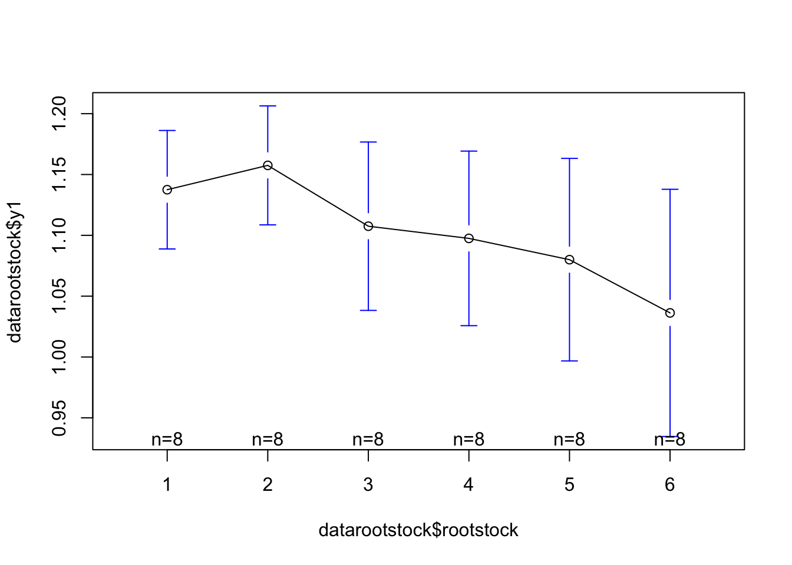
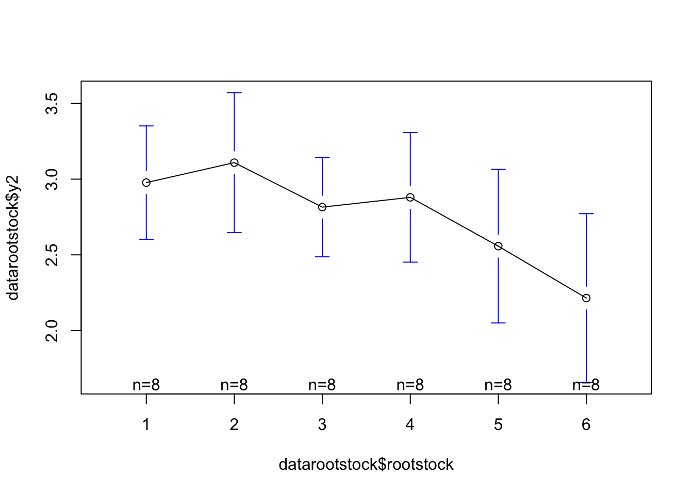
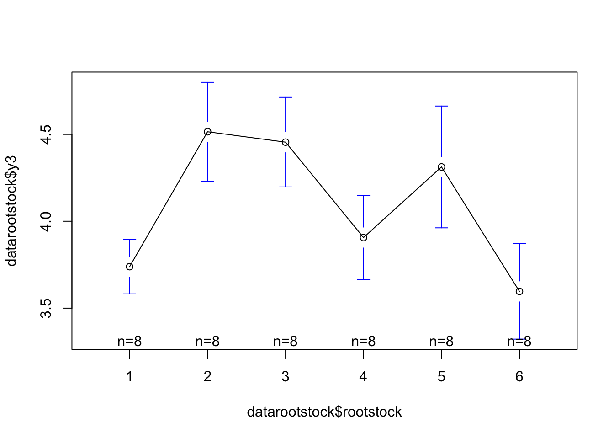
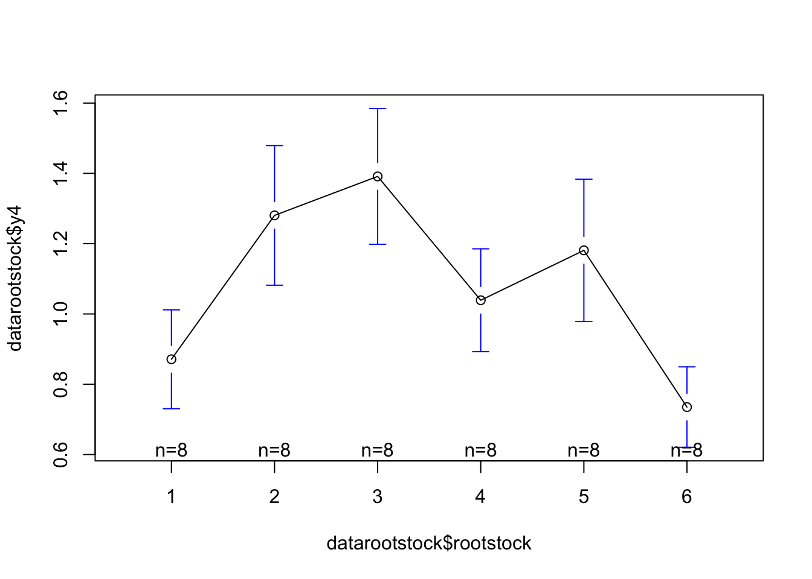
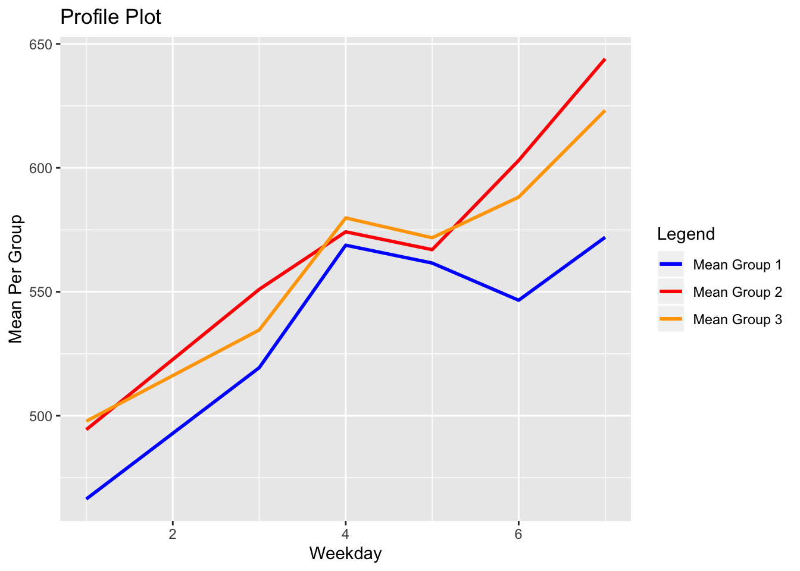

Chapter 6 Multivariate Analysis of Variance Vectors
6.1 One Way Models
We wish to compare the mean vectors of the \(k\) samples for significant differences. The hyphotesis is therefore:
\[H_0=\mu_1=\mu_2=\cdots=\mu_k \text{ vs } H_1: \text{ at least two } \mu's \text{ are unequal.}\]
Equality of the mean vectors implies that the k means are equal for each variables. If two means differ for just one variable, for example, \(\mu_{23}\neq \mu_{43}\), the \(H_0\) is false and we wish to reject ir. We can see this by examining the elements of the population mean vectors.
- Wilks’ Test Statistic
The likelihood ratio of \(H_0:\mu_1=\mu_2= \cdots =\mu_k\) is given by \[\Lambda=\frac{|E|}{|E+H|}\]
,which is known as Wilks’ \(\Lambda\).
We reject \(H_0\) if:
\[\Lambda \leq \Lambda_{\alpha, p, \nu_H, \nu_E}\]
Note that rejection is for small values of .
The parameters in Wilks \(\Lambda\) distribution are:
\[p: \text{number of variables(dimension)}\]
\[\nu_{H}: \text{degress of freedom for hyphotesis}\] \[\nu_{E}: \text{degrees of freedom for error}\] Some properties and characteristics of Wilks’ are as follows:
For determinants to be positive, the following condition must be true: \(\nu_E \geq p\).
For ANY MANOVA model, the degrees of freedom \(\nu_H and \nu_E\) are always the same as in the analogous univariate case.
Parameters \(p\) and \(\nu_H\) can be interchanged; the distribution of \(\Lambda_{p,\nu_H, \nu_E}\) is the same as that of \(\Lambda_{\nu_H,p, \nu_E+ \nu_H-p}\)
Wilks’ \(\Lambda\) can be expressed in terms of the eigenvalues \(\lambda_1, \lambda_2, \cdots, \lambda_s\) of \(E^{-1}H\), as follows:
\[\Lambda= \prod_{i=1}^s \frac{1}{1+\lambda_i}\]
The number of nonzero eigenvalues of \(E^{-1}H\) is:
\[s=min(p, \nu_H)\]
,which is the rank of H.
- When \(\lambda_H=1 \text{ or } 2\) or when \(p=1 \text{ or } 2\), Wilks’ \(\Lambda\) transforms to an exact \(F-statistic.\).
| Parameters | Statistic Having F-Distribution | Degrees of Freedom |
|---|---|---|
| Any \(p, \nu_H=1\) | \(\frac{1-\Lambda}{\Lambda}\frac{\nu_E-p+1}{p}\) | \(p,\nu_E-p+1\) |
| Any \(p, \nu_H=2\) | \(\frac{1-\sqrt\Lambda}{\sqrt\Lambda}\frac{\nu_E-p+1}{p}\) | \(2p,2(\nu_E-p+1)\) |
| \(p=1\), any \(\nu_H\) | \(\frac{1-\lambda}{\lambda}\frac{\nu_E}{\nu_H}\) | \(\nu_H, \nu_E\) |
| \(p=2\), any \(\nu_H\) | \(\frac{1-\sqrt\lambda}{\sqrt\lambda}\frac{\nu_E-1}{\nu_H}\) | \(2\nu_H, 2(\nu_E-1)\) |
The hyphotesis is rejected when the transformed value of \(\Lambda\) exceeds the upper \(\alpha\)-level percentage point of the F-distribution, with degrees of freedoom as shown.
- For values of \(p \text{ and } \nu_H\) other than those mention before, an approximate F-statistic is given by:
\[F=\frac{1-\Lambda^{1/t}}{\Lambda^{1/t}}\frac{df_2}{df_1}\] ,with \(df_1\) and \(df_2\) degrees of freedom, where:
\[df_1=p\nu_H\] \[df_2=wt-\frac{1}{2}(p\nu_H-2)\]
\[w=\nu_E+\nu_H-\frac{1}{2}(p+\nu_H+1)\] \[t=\sqrt{\frac{p^2-\nu_H^2-4}{p^2+\nu_H^2-5}}\] Four Tests and Relantionship to \(T^2\)
Comparing the four test statistics in terms of the eigenvalues \(\lambda_1 > \lambda_2 > \cdots >\lambda_s\) of \(E^{-1}H\), where s=min(\(\nu_H, p\)):
- Pillai \(V^{(s)}=\sum_{i=1}^s \frac{\lambda_i}{1+\lambda_i}\)
- Lawley-Hotelling \(U^{(s)}=\sum_{i=1}^s \lambda_i\)
- Willks’ lambda \(\Lambda=\prod_{i=1}^s \frac{1}{1+\lambda_i}\)
- Roy’s largest root \(\theta= \frac{\lambda_i}{1+\lambda_i}\)
Example 6.1.7
In a classical experiment carried out from \(1918\) to \(1934\), apple trees of different rootstocks were compared (Andrews and Herzberg 1985, pp. 357-360). The data for eight trees from each of six rootstocks are given in Table \(6.2\). The variables are:
\(y_1 = \text{trunk girth at 4 years (mm x 100)}\) \(y_2 =\text{extension growth at 4 years (m)}\) \(y_3 = \text{trunk girth at 15 years (mm x 100)}\) \(y_4 = \text{weight of tree above ground at 15 years (lb x 1000)}\)
#Data
rootstock <- c(1, 1, 1, 1, 1, 1, 1, 1, 2, 2, 2, 2, 2, 2, 2, 2, 3, 3, 3, 3, 3, 3, 3, 3, 4, 4, 4, 4, 4, 4, 4, 4, 5, 5, 5, 5, 5, 5, 5, 5, 6, 6, 6, 6, 6, 6, 6, 6)
y1 <- c(1.11, 1.19, 1.09, 1.25, 1.11, 1.08, 1.11, 1.16, 1.05, 1.17, 1.11, 1.25, 1.17, 1.15, 1.17, 1.19, 1.07, 0.99, 1.06, 1.02, 1.15, 1.2, 1.2, 1.17, 1.22, 1.03, 1.14, 1.01, 0.99, 1.11, 1.2, 1.08, 0.91, 1.15, 1.14, 1.05, 0.99, 1.22, 1.05, 1.13, 1.11, 0.75, 1.05, 1.02, 1.05, 1.07, 1.13, 1.11)
y2 <- c(2.569, 2.928, 2.865, 3.844, 3.027, 2.336, 3.211, 3.037, 2.074, 2.885, 3.378, 3.906, 2.782, 3.018, 3.383, 3.447, 2.505, 2.315, 2.667, 2.39, 3.021, 3.085, 3.308, 3.231, 2.838, 2.351, 3.001, 2.439, 2.199, 3.318, 3.601, 3.291, 1.532, 2.552, 3.083, 2.33, 2.079, 3.366, 2.416, 3.1, 2.813, 0.84, 2.199, 2.132, 1.949, 2.251, 3.064, 2.469)
y3 <-c(3.58, 3.75, 3.93, 3.94, 3.6, 3.51, 3.98, 3.62, 4.09, 4.06, 4.87, 4.98, 4.38, 4.65, 4.69, 4.4, 3.76, 4.44, 4.38, 4.67, 4.48, 4.78, 4.57, 4.56, 3.89, 4.05, 4.05, 3.92, 3.27, 3.95, 4.27, 3.85, 4.04, 4.16, 4.79, 4.42, 3.47, 4.41, 4.64, 4.57, 3.76, 3.14, 3.75, 3.99, 3.34, 3.21, 3.63, 3.95)
y4<- c(0.76, 0.821, 0.928, 1.009, 0.766, 0.726, 1.209, 0.75, 1.036, 1.094, 1.635, 1.517, 1.197, 1.244, 1.495, 1.026, 0.912, 1.398, 1.197, 1.613, 1.476, 1.571, 1.506, 1.458, 0.944, 1.241, 1.023, 1.067, 0.693, 1.085, 1.242, 1.017, 1.084, 1.151, 1.381, 1.242, 0.673, 1.137, 1.455, 1.325, 0.8, 0.606, 0.79, 0.853, 0.61, 0.562, 0.707, 0.952)
datarootstock <- data.frame(rootstock, y1, y2, y3, y4)
datarootstock## rootstock y1 y2 y3 y4
## 1 1 1.11 2.569 3.58 0.760
## 2 1 1.19 2.928 3.75 0.821
## 3 1 1.09 2.865 3.93 0.928
## 4 1 1.25 3.844 3.94 1.009
## 5 1 1.11 3.027 3.60 0.766
## 6 1 1.08 2.336 3.51 0.726
## 7 1 1.11 3.211 3.98 1.209
## 8 1 1.16 3.037 3.62 0.750
## 9 2 1.05 2.074 4.09 1.036
## 10 2 1.17 2.885 4.06 1.094
## 11 2 1.11 3.378 4.87 1.635
## 12 2 1.25 3.906 4.98 1.517
## 13 2 1.17 2.782 4.38 1.197
## 14 2 1.15 3.018 4.65 1.244
## 15 2 1.17 3.383 4.69 1.495
## 16 2 1.19 3.447 4.40 1.026
## 17 3 1.07 2.505 3.76 0.912
## 18 3 0.99 2.315 4.44 1.398
## 19 3 1.06 2.667 4.38 1.197
## 20 3 1.02 2.390 4.67 1.613
## 21 3 1.15 3.021 4.48 1.476
## 22 3 1.20 3.085 4.78 1.571
## 23 3 1.20 3.308 4.57 1.506
## 24 3 1.17 3.231 4.56 1.458
## 25 4 1.22 2.838 3.89 0.944
## 26 4 1.03 2.351 4.05 1.241
## 27 4 1.14 3.001 4.05 1.023
## 28 4 1.01 2.439 3.92 1.067
## 29 4 0.99 2.199 3.27 0.693
## 30 4 1.11 3.318 3.95 1.085
## 31 4 1.20 3.601 4.27 1.242
## 32 4 1.08 3.291 3.85 1.017
## 33 5 0.91 1.532 4.04 1.084
## 34 5 1.15 2.552 4.16 1.151
## 35 5 1.14 3.083 4.79 1.381
## 36 5 1.05 2.330 4.42 1.242
## 37 5 0.99 2.079 3.47 0.673
## 38 5 1.22 3.366 4.41 1.137
## 39 5 1.05 2.416 4.64 1.455
## 40 5 1.13 3.100 4.57 1.325
## 41 6 1.11 2.813 3.76 0.800
## 42 6 0.75 0.840 3.14 0.606
## 43 6 1.05 2.199 3.75 0.790
## 44 6 1.02 2.132 3.99 0.853
## 45 6 1.05 1.949 3.34 0.610
## 46 6 1.07 2.251 3.21 0.562
## 47 6 1.13 3.064 3.63 0.707
## 48 6 1.11 2.469 3.95 0.952## Loading required package: gplots##
## Attaching package: 'gplots'## The following object is masked from 'package:stats':
##
## lowess



# Splitting the data into groups (in this particular case, six groups)
data_group <- split(datarootstock
[,2:5], datarootstock$rootstock)
data_group## $`1`
## y1 y2 y3 y4
## 1 1.11 2.569 3.58 0.760
## 2 1.19 2.928 3.75 0.821
## 3 1.09 2.865 3.93 0.928
## 4 1.25 3.844 3.94 1.009
## 5 1.11 3.027 3.60 0.766
## 6 1.08 2.336 3.51 0.726
## 7 1.11 3.211 3.98 1.209
## 8 1.16 3.037 3.62 0.750
##
## $`2`
## y1 y2 y3 y4
## 9 1.05 2.074 4.09 1.036
## 10 1.17 2.885 4.06 1.094
## 11 1.11 3.378 4.87 1.635
## 12 1.25 3.906 4.98 1.517
## 13 1.17 2.782 4.38 1.197
## 14 1.15 3.018 4.65 1.244
## 15 1.17 3.383 4.69 1.495
## 16 1.19 3.447 4.40 1.026
##
## $`3`
## y1 y2 y3 y4
## 17 1.07 2.505 3.76 0.912
## 18 0.99 2.315 4.44 1.398
## 19 1.06 2.667 4.38 1.197
## 20 1.02 2.390 4.67 1.613
## 21 1.15 3.021 4.48 1.476
## 22 1.20 3.085 4.78 1.571
## 23 1.20 3.308 4.57 1.506
## 24 1.17 3.231 4.56 1.458
##
## $`4`
## y1 y2 y3 y4
## 25 1.22 2.838 3.89 0.944
## 26 1.03 2.351 4.05 1.241
## 27 1.14 3.001 4.05 1.023
## 28 1.01 2.439 3.92 1.067
## 29 0.99 2.199 3.27 0.693
## 30 1.11 3.318 3.95 1.085
## 31 1.20 3.601 4.27 1.242
## 32 1.08 3.291 3.85 1.017
##
## $`5`
## y1 y2 y3 y4
## 33 0.91 1.532 4.04 1.084
## 34 1.15 2.552 4.16 1.151
## 35 1.14 3.083 4.79 1.381
## 36 1.05 2.330 4.42 1.242
## 37 0.99 2.079 3.47 0.673
## 38 1.22 3.366 4.41 1.137
## 39 1.05 2.416 4.64 1.455
## 40 1.13 3.100 4.57 1.325
##
## $`6`
## y1 y2 y3 y4
## 41 1.11 2.813 3.76 0.800
## 42 0.75 0.840 3.14 0.606
## 43 1.05 2.199 3.75 0.790
## 44 1.02 2.132 3.99 0.853
## 45 1.05 1.949 3.34 0.610
## 46 1.07 2.251 3.21 0.562
## 47 1.13 3.064 3.63 0.707
## 48 1.11 2.469 3.95 0.952# Function to get the mean per group and variable (this case, six groups and four variables)
data_means <- sapply(data_group, function(x) {
apply(x, 2, mean)
}, simplify = 'data.frame')
data_means## 1 2 3 4 5 6
## y1 1.137500 1.157500 1.107500 1.09750 1.08000 1.036250
## y2 2.977125 3.109125 2.815250 2.87975 2.55725 2.214625
## y3 3.738750 4.515000 4.455000 3.90625 4.31250 3.596250
## y4 0.871125 1.280500 1.391375 1.03900 1.18100 0.735000## [1] 8## y1 y2 y3 y4
## 1.102708 2.758854 4.087292 1.083000The matrices \(\textbf{H}, \textbf{E}\), and \(\textbf{E+H}\) are given by:
# Nrow: number of dependent varibles
# Ncol: number of dependent varibles
# H Matrix
H = matrix(data = 0, nrow = 4, ncol = 4)
for (i in 1:dim(H)[1]) {
for (j in 1:i) {
H[i,j] <- n * sum((data_means[i,] - total_means[i]) * (data_means[j,] - total_means[j]))
H[j,i] <- n * sum((data_means[j,] - total_means[j]) * (data_means[i,] - total_means[i]))
}
}# E Matrix
E = matrix(data = 0, nrow = 4, ncol = 4)
for (i in 1:dim(E)[1]) {
for (j in 1:i) {
b <- c()
for (k in data_group) {
a <- sum((k[,i] - mean(k[,i])) * (k[,j] - mean(k[,j])))
b <- append(b, a)
}
E[i,j] <- sum(b)
E[j,i] <- sum(b)
}
}## [1] "El valor de la matrix H es:"## [,1] [,2] [,3] [,4]
## [1,] 0.074 0.537 0.332 0.208
## [2,] 0.537 4.200 2.355 1.637
## [3,] 0.332 2.355 6.114 3.781
## [4,] 0.208 1.637 3.781 2.493## [1] "El valor de la matrix E es:"## [,1] [,2] [,3] [,4]
## [1,] 0.320 1.697 0.554 0.217
## [2,] 1.697 12.143 4.364 2.110
## [3,] 0.554 4.364 4.291 2.482
## [4,] 0.217 2.110 2.482 1.723## [,1] [,2] [,3] [,4]
## [1,] 0.394 2.234 0.886 0.426
## [2,] 2.234 16.342 6.719 3.747
## [3,] 0.886 6.719 10.405 6.263
## [4,] 0.426 3.747 6.263 4.216Wilks Lambda
We can compare the mean vectors for significant differences using Wilks’ lambda:
\[\Lambda=\frac{|E|}{|E+H|}\]
# Willks' Lambda
willksLambda <- round(det(E)/det(E+H),3)
print(paste0("Willks' Lambda: ",willksLambda))## [1] "Willks' Lambda: 0.154"# Paramteres of Willks Lambda
p=ncol(datarootstock[,2:5]) #number of variables (dimension)
k=6 #number of groups
n <- dim(datarootstock)[1] / length(unique(datarootstock$rootstock))
nu_H=k-1 #degrees of freedom for hyphotesis
nu_E=k*(n-1) #degrees of freedom for error
print(paste0("Number of variables: ",p))## [1] "Number of variables: 4"## [1] "Degrees of freedom for hyphotesis: 5"## [1] "Degrees of freedom for error: 42"Since: \[\Lambda=0.154 < \Lambda_{.05,4,5,40}=.455\]
We reject \(H_0\).
Note the use of \(\nu_E=40\) in plance of \(\nu_E=42\).
Obtaining the approximate F
# Approximating F
t <- sqrt(((p**2)*(nu_H**2)-4)/((p**2)+(nu_H**2)-5))
w <- nu_E+nu_H- 0.5*(p+nu_H+1)
df1<- p*nu_H
df2 <- w*t-0.5*(p*nu_H-2)
F=round(((1-willksLambda**(1/t))/(willksLambda**(1/t)))*(df2/df1),3)
print(paste0("Approximate F: ",F))## [1] "Approximate F: 4.937"Note that \(F\) exceeds \(F_{0.001,20,120}=2.53\), and we reject \(H_0\).
Next, in order to obtain the other three test statistics, we proceed to obtain the eigenvalues of \(E^{-1}H\):
Pillai’s statistic
# Pillai Statistic: First way
eigenvalues<-eigen(solve(E) %*% H)
eigenvalues<-as.matrix(eigenvalues$values)
eigenvalues## [,1]
## [1,] 1.87567112
## [2,] 0.79069454
## [3,] 0.22904907
## [4,] 0.02595357pillai =0
for (i in 1:dim(eigenvalues)[1]){
pillai[i] <-sum(eigenvalues[i]/(1+eigenvalues[i]))
}
pillai_statistic<-round(apply(as.matrix(pillai), MARGIN= 2, sum),3)
print(paste0("The pillai statistic is: ", pillai_statistic))## [1] "The pillai statistic is: 1.305"## [1] "The eigenvalues are: "## [1] 1.87567112 0.79069454 0.22904907 0.02595357# Pillai Statistic: second way
pillaiStatistic<-sum(eigenvalues$values / (1 + eigenvalues$values))
print(paste0("The pillai statistic is: ", pillaiStatistic))## [1] "The pillai statistic is: 1.3054724154814"To find the critical value for \(V^{(s)}\) in Table A.11, we need:
\[s=min(\nu_H, p)=4\]
\[m=\frac{1}{2}(|\nu_H-p|-1)=0\] \[N=\frac{1}{2}(\nu_E-p-1)=18.5\]
Then \(V_{0.5}^{(s)}=0.645\) (by interpolation). Since \(1.305 > 0.645\), we reject \(H_0\).
Lawley-Hotelling statistic
# Lawley-Hotelling
lawleyHotelling<-round(sum(eigenvalues$values) ,4)
print(paste0("Lawley-Hotelling Statistic: ", lawleyHotelling))#the lawley-hotelling statistic or hotelling generalized T^2 statistc## [1] "Lawley-Hotelling Statistic: 2.9214"lawleyHotellingTest <- round(lawleyHotelling*nu_E/nu_H, 4)
print(paste0("Lawley Hotelling Test Statistic: ", lawleyHotellingTest))## [1] "Lawley Hotelling Test Statistic: 24.5398"The \(0.05\) critical value for \(\nu_{E}U^{(s)}/\nu_H\) is given in Table A.12 as \(7.6188\) (using \(\nu_E = 40\)), and we therefore reject \(H_0\).
Roy’s test
# Roys
lambda1<-eigenvalues$values[1]
print(paste0("The largest eigenvalue or Roys Statistic is: ", round(lambda1,4)))## [1] "The largest eigenvalue or Roys Statistic is: 1.8757"roysLargestRootTest <-round(lambda1/(1+lambda1), 3)
print(paste0("Roy's Largest Root Test Statistic: ", roysLargestRootTest))## [1] "Roy's Largest Root Test Statistic: 0.652"Roy’s test statistic is givben by \(\theta=0.652\), which exceeds the \(0.05\) critical value \(0.377\) obtained(by interpolation) from Table \(A.10\), and we reject \(H_0\).
Comparing results with those obtainted throught the package “MASS”.
## Loading required package: MASS# Converting to factor de variable that determines the groups (k)
datarootstock$rootstock <- as.factor(datarootstock$rootstock)
dependent_vars <- as.matrix(datarootstock[,2:5])
# Employing MANOVA package
rootstock_tests<-manova(dependent_vars~datarootstock$rootstock, data=datarootstock)
# H
summary(rootstock_tests, test="Pillai")$SS[1]## $`datarootstock$rootstock`
## y1 y2 y3 y4
## y1 0.07356042 0.5373852 0.3322646 0.208470
## y2 0.53738521 4.1996619 2.3553885 1.637108
## y3 0.33226458 2.3553885 6.1139354 3.781044
## y4 0.20847000 1.6371084 3.7810437 2.493091## $Residuals
## y1 y2 y3 y4
## y1 0.3199875 1.696564 0.5540875 0.217140
## y2 1.6965637 12.142790 4.3636125 2.110214
## y3 0.5540875 4.363612 4.2908125 2.481656
## y4 0.2171400 2.110214 2.4816562 1.722525## Df Pillai approx F num Df den Df Pr(>F)
## datarootstock$rootstock 5 1.3055 4.0697 20 168 1.983e-07 ***
## Residuals 42
## ---
## Signif. codes: 0 '***' 0.001 '**' 0.01 '*' 0.05 '.' 0.1 ' ' 1## Df Wilks approx F num Df den Df Pr(>F)
## datarootstock$rootstock 5 0.15401 4.9369 20 130.3 7.714e-09 ***
## Residuals 42
## ---
## Signif. codes: 0 '***' 0.001 '**' 0.01 '*' 0.05 '.' 0.1 ' ' 1## Df Hotelling-Lawley approx F num Df den Df Pr(>F)
## datarootstock$rootstock 5 2.9214 5.4776 20 150 2.568e-10
## Residuals 42
##
## datarootstock$rootstock ***
## Residuals
## ---
## Signif. codes: 0 '***' 0.001 '**' 0.01 '*' 0.05 '.' 0.1 ' ' 1## Df Roy approx F num Df den Df Pr(>F)
## datarootstock$rootstock 5 1.8757 15.756 5 42 1.002e-08 ***
## Residuals 42
## ---
## Signif. codes: 0 '***' 0.001 '**' 0.01 '*' 0.05 '.' 0.1 ' ' 1For better undestanding of the results:
| Type | Statistic | Approximantion F | \(Df_1\) | \(Df_2\) | P-value |
|---|---|---|---|---|---|
| Pillai | 1.3055 | 4.0697 | 20 | 168 | 1.983e-07 |
| Wilks | 0.15401 | 4.9369 | 20 | 130.3 | 7.714e-09 |
| Hotelling-Lawley | 2.9214 | 5.4776 | 20 | 150 | 2.568e-10 |
| Roys | 1.8757 | 15.756 | 5 | 42 | 1.002e-08 |
6.1.0.0.1 Measures of Multivariate Association
In (one way) MANOVA, we nedd to measure the strenght of the association between several dependant variables and several independent(grouping) variables. Various measurements of multivariate association have been proposed.
Wilks suggested a “generalized \(\eta^2\)”: MANOVA \(\eta^2=\eta^2_{\Lambda}=1- \Lambda\), based on the use of |E| and |E+H| as generalizations of sums of squares. We use \(1-\Lambda\) because \(\Lambda\) is small if the spread in the means is large.
We now consider an \(\eta^2\) based on Roy’s statistic, \(\theta=\frac{\lambda_1}{1+\lambda_1}=\eta_{\theta}^2\)
\(A_\Lambda=1-\Lambda^{1/s}\)
\(A_P= \frac{V^{(s)}}{s}\)
\(A_{LH}= \frac{\frac{U^{(s)}}{s}}{1+U^{(s)}/s}\)
Example 6.1.8
We illustrate some measures of association for the rootstock data in Table 6.2.
\(\eta_{\Lambda}^2\):
## [1] 0.846\(\eta_{\theta}^2\):
## [1] 0.652\(A_{\Lambda}:\)
## [1] 0.374\(A_{P}:\)
## [1] 0.326\(A_{LH}:\)
## [1] 0.4226.2 Comparison of the four MANOVA test statistics comparison ot the four MANOVA test statistics
When \(H_0: \mu_1= \mu_2=\cdots=\mu_k\) is true, all four MANOVA test statistics have the same probability of rejection. However, when \(H_0\) is false, the four tests have different probabilities of rejection.
In terms of power the test are ordered \(\theta \geq U^{(s)}\geq \Lambda \geq V^{(s)}\) for the collinear case. In the diffuse case and for intermediate structure between collinera and diffuse, the ordering of power is reversed, \(V^{(s)}\geq\Lambda\geq U^{(s)}\geq\theta\).
In practice, most MANOVA software programs routinely calculate all four test statistics, and they usually reach the same conclusion. In thos cases when they differ as to acceptance or rejection of the hyphotesis, one can examine the eigenvalues and covariance matrices and evaluate the conflicting conclusions in light of the test properties discussed previously.
Example 6.2
We inspect the eigenvalues of \(E^{-1} H\) for the rootstock data of Table \(6.2\) for an indication of the configurof the six mean vectors in a four-dimensional space. The eigenvalues are \(1.876, .791, .229, .026.\) The first eigenvalue \(1.876\) constitutes a proportion:
## [1] 0.642of the sum of the eigenvalues. Therefore, the first eigenvalue does not dominate the others and the mean vectors are not colinear. The first two eigenvalues account for a proporpotion:
## [1] 0.913of sum of the eigenvalues and thus the six mean vectors lie largely in two dimensions. Since the mean vectors are not collinear, the test statistics \(\Lambda, V^{(s)}\) and \(U^{(s)}\) will be more appropiate than \(\theta\) in this case.
6.3 Constrasts
6.3.1 Univariate Contrasts
A contrast in the population means is defined as a linear combination:
\[\delta=c_1\mu_1+ c_2 \mu_2+ \cdots + c_k \mu_k\]
where the coefficients satisfy:
\[\sum_{i=1}^k=0\]
The usual hyphotesis to be tested by a contrast is:
\[H_{0}: \delta =c_1\mu_1+ c_2\mu_2+ \cdots + c_k\mu_k=0\]
A contrast is often called a comparison among the treatment means.
6.3.2 Multivariate Contrasts
There are two usages of contrasts in a multivariate setting.
We have previously encountered one use in Section 5.9.1, where we considered the hypothesis \(H_{0}: = C\mu=0\) with Cj=0. Each row of C sums to zero, and \(C\mu\) is therefore a set of contrasts comparing the elements \(\mu_1,\mu_2,\cdots, \mu_p\) of \(\mu\) with each other.
In this section, on the other hand, we consider contrasts comparing several mean vectors, not the elements within a vector. A contrast among the population mean vectors is defined as:
\[\delta =c_1\mu_1+ c_2\mu_2+ \cdots + c_k \mu_k\] , where \(\sum_{i=1}^kc_i=0\). An unbiased estimator of \(\delta\) is given by the corresponding constrast in the sample mean vectors:
\[\hat{\delta} =c_1\bar{y}_1+ c_2\bar{y}_2+ \cdots + c_k\bar{y}_k\]
The sample mean vectors \(\bar{y}_1,\bar{y}_2, \cdots,\bar{y}_k\) as defined in Section \(6.1.2\) were assumed to be independent and have common covariance matrix, cov(\(\bar{y}_i)=\sum/n\). Thus the covariance matrix for \(\hat{\delta}\) is given by:
\[cov(\hat{\delta}= c_1^2\frac{\Sigma}{n}+c_2^2\frac{\Sigma}{n}+ \cdots+ c_3^2\frac{\Sigma}{n}=\frac{\Sigma}{n}\sum_{i=1}^{k}c_i^2\] , which can be estimated by:
\[\frac{S_{pl}}{n}\sum_{i=1}^kc_i^2= \Big(\frac{E}{\nu_E}\Big)\Big(\frac{\sum_{i=1}^{k}c_i^2}{n})\] , where \(S_{pl}=E/\nu_E\) is an unbiased estimator of \(\Sigma\). The hypothesis \(H_{0} : \delta= 0 or H_0: c_1\mu_1 + c_2\mu_2+\cdots+c_k\mu_k=0\) makes comparisons among the population mean vectors.
An equivalent test of \(H_0\) can be made with Wilks’ \(\Lambda\). By analogy with the numerator of (6.57), the hyphotesis matrix due to the contrast is given by:
\[H_1=\frac{n}{\sum_{i=1}^k c_i^2}\Big(\sum_{i=1}^kc_i\bar{y}_i\Big)\Big(\sum_{i=1}^kc_i\bar{y}_i\Big)'\]
The rank of \(H_1\) is 1, and the test statistic is: \[\Lambda= \frac{|E|}{|E+H_1|}\]
,which is distributed as \(\Lambda_{p, 1,\nu_E}\). **Becasue \(\nu_H=1\) in this case, all four MANOVA statistics and \(T^2\) give the same results.
Example 6.3.2
We consider the following two orthogonal constrast for the rootstock data in Tabla 6.2:
## [1] 2 -1 -1 -1 -1 2## [1] 1 0 0 0 0 -1The first compares \(\mu_1\) and \(\mu_6\) with the other four mean vectors. The second compares \(\mu_1\) vs \(\mu_6\). Thus \(H_01:2\mu_1-\mu_2-\mu_3-\mu_4-\mu_5+2\mu_6=0\) can be written as:
\[H_{01}:2\mu_1+2\mu_6=\mu_2+\mu_3+\mu_4+\mu_5\]
Dividing both sides by 4 so as to express this in terms of averages, we obtain:
\[H_{01}:\frac{1}{2}\mu_1+\frac{1}{2}\mu_6=\frac{1}{4}(\mu_2+\mu_3+\mu_4+\mu_5).\]
Similarly, the hypothesis for the second contrast can be expressed as:
\[H_{02}=\mu_1=\mu_6\].
The mean vectors are given by:
## Loading required package: tidyverse## ── Attaching packages ───────────────────────────── tidyverse 1.3.0 ──## ✔ ggplot2 3.2.1 ✔ purrr 0.3.3
## ✔ tibble 2.1.3 ✔ dplyr 0.8.3
## ✔ tidyr 1.0.0 ✔ stringr 1.4.0
## ✔ readr 1.3.1 ✔ forcats 0.4.0## ── Conflicts ──────────────────────────────── tidyverse_conflicts() ──
## ✖ dplyr::filter() masks stats::filter()
## ✖ dplyr::lag() masks stats::lag()
## ✖ dplyr::select() masks MASS::select()mean_vectors<-datarootstock %>%
group_by(rootstock) %>%
summarise_at(vars(c(y1,y2,y3,y4)),
list(mean)
)
mean_vectors<-t(mean_vectors %>% select(y1, y2, y3, y4)) #mean vectors per group(6 groups of 8)
round(mean_vectors,2)## [,1] [,2] [,3] [,4] [,5] [,6]
## y1 1.14 1.16 1.11 1.10 1.08 1.04
## y2 2.98 3.11 2.82 2.88 2.56 2.21
## y3 3.74 4.52 4.46 3.91 4.31 3.60
## y4 0.87 1.28 1.39 1.04 1.18 0.74For the first constrast, we obtain \(H_1=\frac{n}{\sum_i c_i^2}\Big(\sum_i c_i\bar{y}_i\Big)\Big(\sum_i c_i\bar{y}_i\Big)'\)
## [1] 2 -1 -1 -1 -1 2## [,1] [,2] [,3] [,4] [,5] [,6]
## y1 2.275000 -1.15750 -1.10750 2.19500 -1.0800 -1.036250
## y2 -2.977125 6.21825 -2.81525 -2.87975 5.1145 -2.214625
## y3 -3.738750 9.03000 -4.45500 -3.90625 8.6250 -3.596250
## y4 -0.871125 -1.28050 2.78275 -1.03900 -1.1810 1.4700006.4 Tests on individual variables following rejection of \(H_0\) by the overall MANOVA test
Example 6.4
6.5 Two-way Classification
Example 6.5.2
6.6 Other Models
6.7 Checking on Assumptions
6.8 Profile Analysis
The two sample profile analysis of Section \(5.9.2\) can be extended to \(k\) groups.
The basic model is the balanced one-way MANOVA.
\[y_{ij}=\mu_i +\epsilon_{ij}, i=1, 2, \cdots, k, j=1, 2, \cdots, n.\]
To test \(H_0:\mu_1=\mu_2=\cdots=\mu_k\), we use the usual \(\textbf{H}\) and \(\textbf{E}\) matrices given in (6.9) and (6.10).
If the variables are commensurate, we can be more specific and extend \(H_0\) to an examination of the \(k\) profiles obtained byt plotting the \(p\) values \(\mu_{i1}, \mu_{i2}, \cdots, \mu_{ip}\) in \(\mu_i\), as was done with two _i’s in Section \(5.9.2\). We are intereseted in the same three hyphotesis as before:
\[H_{01}:\text{ The profiles are parallel}.\] \[H_{02}:\text{ The profiles are all the same level}.\] \[H_{03}:\text{ The profiles are flat.}\]
For k groups, the hypothesis of parallelism for two groups is expressed as:
\[H_{01}: C\mu_1=C\mu_1=\cdots=C\mu_k\]
The hyphotesis and error matrices for testing \(H_01\) are:
\[H_z=CHC', E_z=CEC'\]
Thus,\[\Lambda= \frac{|E_z|}{|H_z+E_z|}=\frac{|CEC'|}{|CEC'+CHC'|}=\frac{|CEC'|}{|C(E+H)C'|}\]
Which is distributed as \(\Lambda_{p-1,\nu_H, \nu_E}\), where \(\nu_H=k-1\) and \(\nu_E=k(n-1)\). The other three MANOVA test statistics can be obtained from the eigenvalues of \((CEC')^{-1}(CHC')\). The test for \(H_{01}\) can easily be adjusted for unbalanced data.
Example 6.8
Three vitamin E diet supplements with levels zero, low, and high were compared for their effect on growth of guinea pigs (Crowder and Hand \(1990\), pp. \(21-29\)). Five guinea pigs received each supplement level, and their weights were recorded at the end of weeks \(1, 3,4, 5, 6\), and \(7\). These weights are given in Table \(6.8\).
The three mean vectors are:
y1_hat<-c(466.4,519.4,568.8,561.6,546.6,572.0)
y2_hat<-c(494.4,551.0,574.2,567.0,603.0,644.0)
y3_hat<-c(497.8,534.6,579.8,571.8,588.2,623.2)## y1_hat y2_hat y3_hat
## 1 466.4 494.4 497.8
## 2 519.4 551.0 534.6
## 3 568.8 574.2 579.8
## 4 561.6 567.0 571.8
## 5 546.6 603.0 588.2
## 6 572.0 644.0 623.2if(!require("dplyr")){
install.packages("dplyr")
library(dplyr)
}
data68<-data68 %>% mutate(mean_all = apply(., 1, mean))
data68<-data68 %>% mutate(weekday = c(1,3,4,5,6,7))
data68## y1_hat y2_hat y3_hat mean_all weekday
## 1 466.4 494.4 497.8 486.2000 1
## 2 519.4 551.0 534.6 535.0000 3
## 3 568.8 574.2 579.8 574.2667 4
## 4 561.6 567.0 571.8 566.8000 5
## 5 546.6 603.0 588.2 579.2667 6
## 6 572.0 644.0 623.2 613.0667 7The overall mean vector is:
## [1] 486.2000 535.0000 574.2667 566.8000 579.2667 613.0667A profile plot of the means \(\bar{y}_1 , \bar{y}_2\), and \(\bar{y}_3\) is given bellow. There is a high degree of parallelism in the three profiles, with the possible exception of week \(6\) for group \(1\).
if(!require("ggplot2")){
install.packages("ggplot2")
library(ggplot2)
}
colors <- c("Mean Group 1"= "blue","Mean Group 2" = "red", "Mean Group 3" = "orange")
ggplot(data68, aes(x=weekday)) +
geom_line(aes(y = y1_hat, color="Mean Group 1"), size = 1)+ geom_line(aes(y = y2_hat, color="Mean Group 2" ), size = 1)+ geom_line(aes(y = y3_hat, color="Mean Group 3"), size = 1)+ labs(y="Mean Per Group", x = "Weekday", title= "Profile Plot", color = "Legend")+ scale_color_manual(values = colors)
In a univariate case we have “between” and “within” sums of squares \(SSH\) and \(SSE\). By analogy, in the multivariate case, we have “between” and “within” matrices and , defined as:
\[H=n\sum^k_{i=1} (\bar{y}_{i.}-\bar{y})(\bar{y}_{i.}-\bar{y})'\] \[H=\frac{1}{n} \sum^k_{i=1} y_{i.}y_{i.}'- \frac{1}{kn}y_{..}y_{..}'\]
\[E=\sum_{ij}y_{ij}y'_{ij}-\sum_{i}\frac{1}{n}y_{i.}y_{i.}'\] \[E=\sum_{i=1}^k\sum_{j=i}^n(y_{ij}-\bar{y}_{i.})(y_{ij}-\bar{y}_{i.})'\]
The \(E\) and \(H\) matrices are as follows:
# H matrix
n <- 5 #number of guinea pigs tested.
H<-as.matrix(
(
((data68$y1_hat-data68$mean_all) %*% t(data68$y1_hat-data68$mean_all)) +
((data68$y2_hat-data68$mean_all) %*% t(data68$y2_hat-data68$mean_all)) +
((data68$y3_hat-data68$mean_all) %*% t(data68$y3_hat-data68$mean_all))
)
*n
)
H## [,1] [,2] [,3] [,4] [,5] [,6]
## [1,] 2969.2 2177.2 859.4000 813.0 4725.200 5921.600
## [2,] 2177.2 2497.6 410.0000 411.6 4428.800 5657.600
## [3,] 859.4 410.0 302.5333 280.4 1132.133 1392.533
## [4,] 813.0 411.6 280.4000 260.4 1096.400 1352.000
## [5,] 4725.2 4428.8 1132.1333 1096.4 8550.933 10830.933
## [6,] 5921.6 5657.6 1392.5333 1352.0 10830.933 13730.133group <- c(rep(1,5), rep(2,5), rep(3,5))
animal <- seq(1:15)
week1 <- c(455, 467,445,485,480,514,440,495,520,503,496,498,478,545,472)
week3 <- c(460,565,530,542,500,560,480,570,590,555,560,540,510,565,498)
week4 <- c(510, 610,580, 594, 550, 565,536,569,610,591,622,589,568,580,540)
week5 <- c(504,596,597,583,528,524,484,585,637,605,622,557,555,601,524)
week6 <- c(436,542,582,611,562,552,567,576,671,649,632,568,576,633,532)
week7 <- c(466,587,619,612,576,597,569,677,702,675,670,609,605,649,583)
data68_ext <- data.frame(group, animal, week1, week3, week4, week5, week6, week7)
data68_ext## group animal week1 week3 week4 week5 week6 week7
## 1 1 1 455 460 510 504 436 466
## 2 1 2 467 565 610 596 542 587
## 3 1 3 445 530 580 597 582 619
## 4 1 4 485 542 594 583 611 612
## 5 1 5 480 500 550 528 562 576
## 6 2 6 514 560 565 524 552 597
## 7 2 7 440 480 536 484 567 569
## 8 2 8 495 570 569 585 576 677
## 9 2 9 520 590 610 637 671 702
## 10 2 10 503 555 591 605 649 675
## 11 3 11 496 560 622 622 632 670
## 12 3 12 498 540 589 557 568 609
## 13 3 13 478 510 568 555 576 605
## 14 3 14 545 565 580 601 633 649
## 15 3 15 472 498 540 524 532 583# Splitting the data per group
data68_group <- split(data68_ext[,3:8], data68_ext$group)
data68_group## $`1`
## week1 week3 week4 week5 week6 week7
## 1 455 460 510 504 436 466
## 2 467 565 610 596 542 587
## 3 445 530 580 597 582 619
## 4 485 542 594 583 611 612
## 5 480 500 550 528 562 576
##
## $`2`
## week1 week3 week4 week5 week6 week7
## 6 514 560 565 524 552 597
## 7 440 480 536 484 567 569
## 8 495 570 569 585 576 677
## 9 520 590 610 637 671 702
## 10 503 555 591 605 649 675
##
## $`3`
## week1 week3 week4 week5 week6 week7
## 11 496 560 622 622 632 670
## 12 498 540 589 557 568 609
## 13 478 510 568 555 576 605
## 14 545 565 580 601 633 649
## 15 472 498 540 524 532 583# Function to get the mean per group and week
data68_means <- sapply(data68_group, function(x) {
apply(x, 2, mean)
}, simplify = 'data.frame')
data68_means## 1 2 3
## week1 466.4 494.4 497.8
## week3 519.4 551.0 534.6
## week4 568.8 574.2 579.8
## week5 561.6 567.0 571.8
## week6 546.6 603.0 588.2
## week7 572.0 644.0 623.2## [1] 5## week1 week3 week4 week5 week6 week7
## 486.2000 535.0000 574.2667 566.8000 579.2667 613.0667# H Matrix
H = matrix(data = 0, nrow = 6, ncol = 6)
for (i in 1:dim(H)[1]) {
for (j in 1:i) {
H[i,j] <- n * sum((data68_means[i,] - total_means[i]) * (data68_means[j,] - total_means[j]))
H[j,i] <- n * sum((data68_means[j,] - total_means[j]) * (data68_means[i,] - total_means[i]))
}
}# E Matrix
E = matrix(data = 0, nrow = 6, ncol = 6)
for (i in 1:dim(E)[1]) {
for (j in 1:i) {
b <- c()
for (k in data68_group) {
a <- sum((k[,i] - mean(k[,i])) * (k[,j] - mean(k[,j])))
b <- append(b, a)
}
E[i,j] <- sum(b)
E[j,i] <- sum(b)
}
}## [1] "El valor de la matrix H es:"## [,1] [,2] [,3] [,4] [,5] [,6]
## [1,] 2969.2 2177.2 859.4000 813.0 4725.200 5921.600
## [2,] 2177.2 2497.6 410.0000 411.6 4428.800 5657.600
## [3,] 859.4 410.0 302.5333 280.4 1132.133 1392.533
## [4,] 813.0 411.6 280.4000 260.4 1096.400 1352.000
## [5,] 4725.2 4428.8 1132.1333 1096.4 8550.933 10830.933
## [6,] 5921.6 5657.6 1392.5333 1352.0 10830.933 13730.133## [1] "El valor de la matrix E es:"## [,1] [,2] [,3] [,4] [,5] [,6]
## [1,] 8481.2 8538.8 4819.8 8513.6 8710.0 8468.2
## [2,] 8538.8 17170.4 13293.0 19476.4 17034.2 20035.4
## [3,] 4819.8 13293.0 12992.4 17077.4 17287.8 17697.2
## [4,] 8513.6 19476.4 17077.4 28906.0 26226.4 28625.2
## [5,] 8710.0 17034.2 17287.8 26226.4 36898.0 31505.8
## [6,] 8468.2 20035.4 17697.2 28625.2 31505.8 33538.8## [1] 1.40331+0i# Creating "C"
y1 <- c(1, 0, 0, 0,0)
y2 <- c(-1, 1, 0, 0,0)
y3 <- c(0,-1, 1, 0, 0)
y4 <- c(0,0,-1,1, 0)
y5 <- c(0, 0, 0, -1,1)
y6 <- c( 0,0,0,0, -1)
C <- data.frame(y1, y2, y3,y4,y5, y6)
C<-as.matrix(C)
C## y1 y2 y3 y4 y5 y6
## [1,] 1 -1 0 0 0 0
## [2,] 0 1 -1 0 0 0
## [3,] 0 0 1 -1 0 0
## [4,] 0 0 0 1 -1 0
## [5,] 0 0 0 0 1 -1## [1] 0.1791# Using manova function, to compare outcomes
#!!!!!!Revisar, los resultados no están bien aún
dependent_vars <- as.matrix(data68_ext[3:8])
model <- manova(dependent_vars ~as.factor(data68_ext$group))
model <-summary(model,test="Wilks") #here we can specify whatever test we'd like: Wilks, Pillai, Hotelling-Lawley or Roy
H<-model$SS[1] #to access matrix H
E<- model$SS[2] #to acces matrix E
print("El valor de la matrix H es:")## [1] "El valor de la matrix H es:"## $`as.factor(data68_ext$group)`
## week1 week3 week4 week5 week6 week7
## week1 2969.2 2177.2 859.4000 813.0 4725.200 5921.600
## week3 2177.2 2497.6 410.0000 411.6 4428.800 5657.600
## week4 859.4 410.0 302.5333 280.4 1132.133 1392.533
## week5 813.0 411.6 280.4000 260.4 1096.400 1352.000
## week6 4725.2 4428.8 1132.1333 1096.4 8550.933 10830.933
## week7 5921.6 5657.6 1392.5333 1352.0 10830.933 13730.133## [1] "El valor de la matrix E es:"## $Residuals
## week1 week3 week4 week5 week6 week7
## week1 8481.2 8538.8 4819.8 8513.6 8710.0 8468.2
## week3 8538.8 17170.4 13293.0 19476.4 17034.2 20035.4
## week4 4819.8 13293.0 12992.4 17077.4 17287.8 17697.2
## week5 8513.6 19476.4 17077.4 28906.0 26226.4 28625.2
## week6 8710.0 17034.2 17287.8 26226.4 36898.0 31505.8
## week7 8468.2 20035.4 17697.2 28625.2 31505.8 33538.8## [1] "Test"## Df Wilks approx F num Df den Df Pr(>F)
## as.factor(data68_ext$group) 2 0.08793 2.7677 12 14 0.0363 *
## Residuals 12
## ---
## Signif. codes: 0 '***' 0.001 '**' 0.01 '*' 0.05 '.' 0.1 ' ' 16.8.1 Repeated Measures Designs
Example 6.9.2
Example 6.9.5
6.9 Growth Curves
Example 6.10.1
Example 6.10.2
6.10 Tests on a Subvector
Example 6.11.1
The univariate tests completely ignore the correlations among the variables, whereas the multivariate tests make direct use of the correlations.
The multivariate test is more powerful in many cases. The power of a test is the probability of rejecting HQ when it is false. In some cases, all p of the univariate tests fail to reach significance, but the multivariate test is significant because small effects on some of the variables combine to jointly indicate significance. However, for a given sample size, there is a limit to the number of variables a multivariate test can handle without losing power. This is discussed further in Section 5.3.2.
Many multivariate tests involving means have as a by-product the construction of a linear combination of variables that reveals more about how the variables unite to reject the hypothesis.
\[ H_{0}:\left(\begin{array}{c} \mu_{1}\\ \mu_{2}\\ \vdots\\ \mu_{p} \end{array}\right)=\left(\begin{array}{c} \mu_{01}\\ \mu_{02}\\ \vdots\\ \mu_{0p} \end{array}\right),\qquad H_{0}:\left(\begin{array}{c} \mu_{1}\\ \mu_{2}\\ \vdots\\ \mu_{p} \end{array}\right)\neq\left(\begin{array}{c} \mu_{01}\\ \mu_{02}\\ \vdots\\ \mu_{0p} \end{array}\right) \] To test \(H_{0}\), we use a random sample of n observation vectors \(y_{1}, y_{2}, ...,y_{n}\) from \(Ν_{p}(\mu, \Sigma)\), with \(\Sigma\) known, and calculate \(\bar{y}=\sum_{i=1}^{n}y_{i}/n\). The test statistic is:
\[Z^{2}=n\left(\bar{y}-\mu_{0}\right)^{'}\Sigma^{-1}\left(\bar{y}-\mu_{0}\right)\]
If \(H_{0}\) is true, \(Z\) is distributed as \(\chi_{p}^{2}\), and we therefore reject \(H_{0}\) if \(Z >\chi_{\alpha}^{2}\).